This week
Stand out before you transfer.
Research, jobs, internships, and transfer programs you can apply to from RCC.
GDG on Campus Riverside City College is an independent group; our activities and the opinions expressed here should in no way be linked to Google, the corporation.
Transfer applications
UC also reads what you did outside class.
Your GPA makes you eligible. The transfer application also has 20 activity entries and four short essays.
Most big-tech intern programs want bachelor’s students.
Big-tech first-year programs
Microsoft, Amazon, Capital One, and Salesforce list “bachelor’s.” Google STEP has no postings.
Built for community college
DOE, NIH, NASA, Cal-Bridge, and STEM Connect take you now.
Four things you can do from RCC.
- ResearchNSF REU, DOE national labs, NIH, and RCC’s STEM programs.
- Jobs and internshipsHandshake, USAJOBS, NASA, and the tech internship lists.
- Transfer programsUC TAP and TAG.
- HackathonsCutie Hack, SB Hacks, Rose Hack, Hacktech, and more.
NSF REU · paid summer research
Search NSF’s ETAP site.
- Search a keyword, like “biology”
- Filter: Undergraduate, your field, your state
- Press Apply NowMost close January to March.
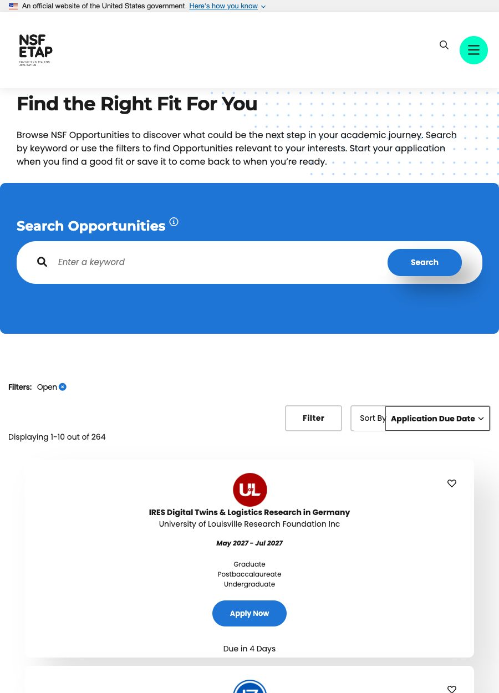
RCC students do paid summer research at UCR and the CSUs.
- Inland Empire
- RCC, MLK 306
- UCR
- CSUSB
- CSU Fullerton
DOE national labs · due Jan 6
Only for community college students.
- Check that you qualify2.7 GPA, 6 STEM units, 12 total.
- Pick labs, write essays, add transcripts
- Get 2 letters from STEM instructors
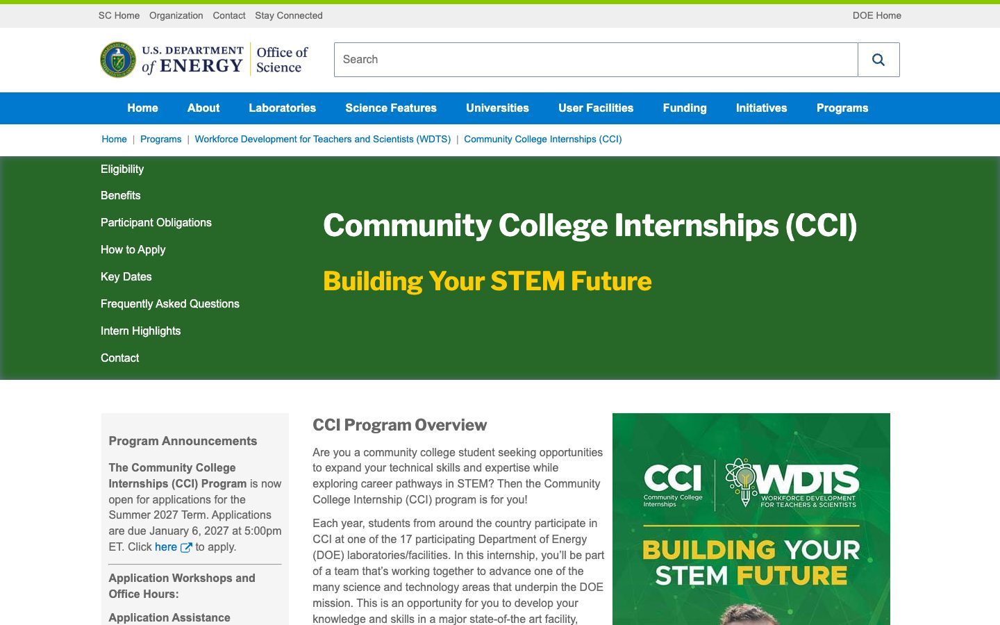
NIH summer internships · due Jan 26
NIH takes community college students.
- Make an NIH profile
- Pick Summer internships, pass the screener
- Send a resume, a statement, 2 references
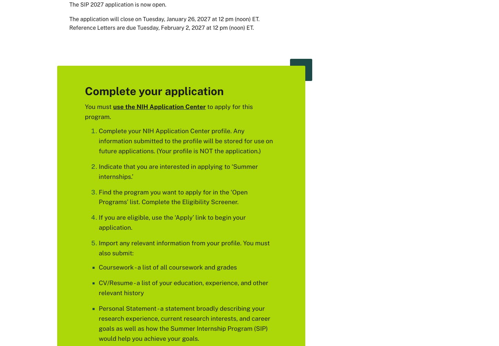
No program? Email a professor.
From your school email
- To · a UCR or CSUSB professor
- Subject · Research in your lab
- Who you are · name, major, RCC
- Why their lab · one of its projects
- When you’re free · resume attached
Ask your RCC professors who they know at UCR. Send 5 to 10 of these, and follow up once.
Jobs and internships · Handshake
Campus jobs and local internships.
- Log in with your student.rccd.edu email
- Jobs, then Internship, within 50 miles
- Upload a resume and apply to fiveRCC tutors make $17 to $19.75 an hour.
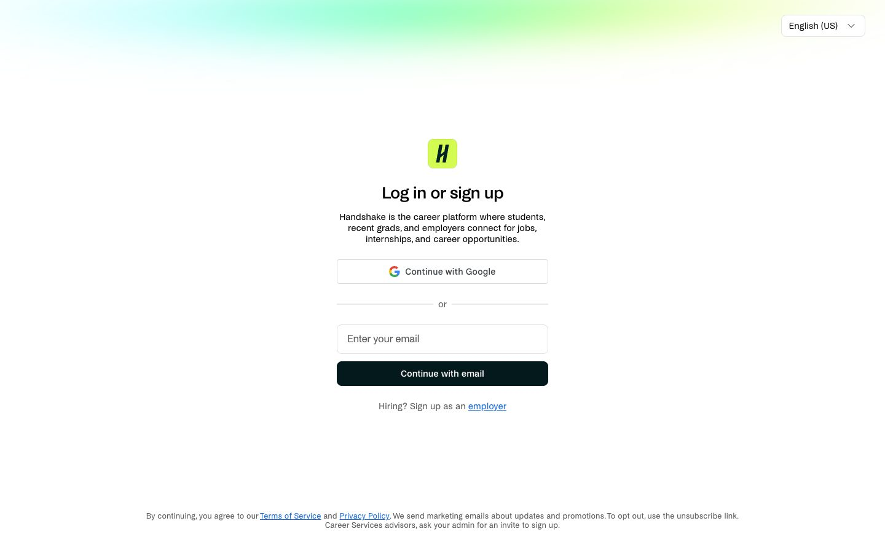
Federal internships · USAJOBS Pathways
Federal jobs for students.
- Pick the Students hiring path
- Add your state
- Job type: Internships52 open in California today.
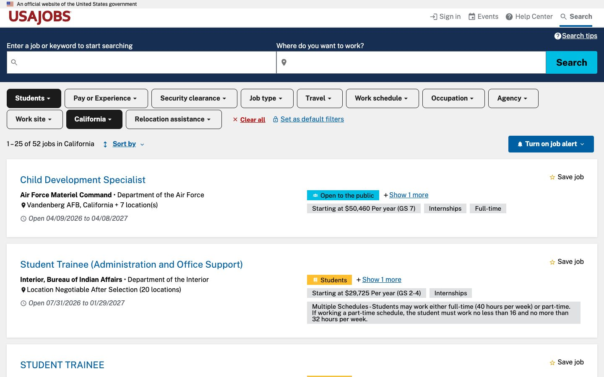
NASA internships · due Mar 1
Paid, any major, 3.0 GPA.
- Search NASA STEM Gateway
- Tick Internships
- Sort by deadline and applyNo letters needed.
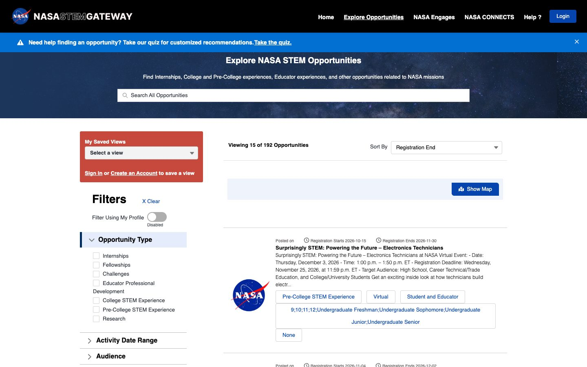
Tech internships · summer 2027
1,285 tech internships, one list.
- Pick a category, like software or AI
- Check the legend for closed roles
- Read who each company takes
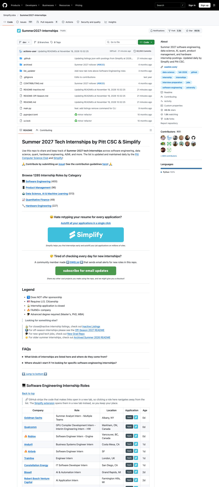
Transfer programs · UC TAP and TAG
TAG: a guaranteed UC spot.
- Make a UC TAP account now
- Add your classes as you take them
- File TAG September 1 to 30Six UCs. Davis and Irvine left out CS.
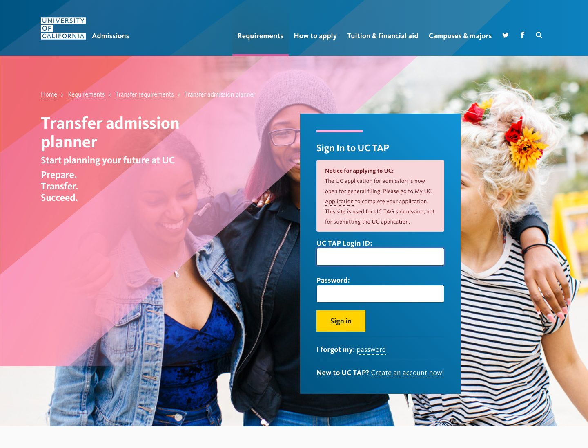
Hackathons coming up near you.
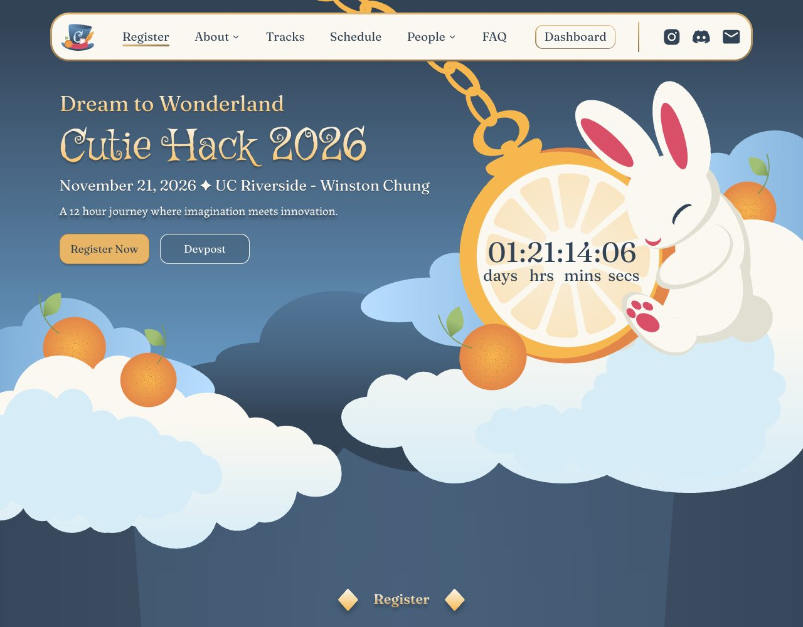
Nov 21 · Cutie Hack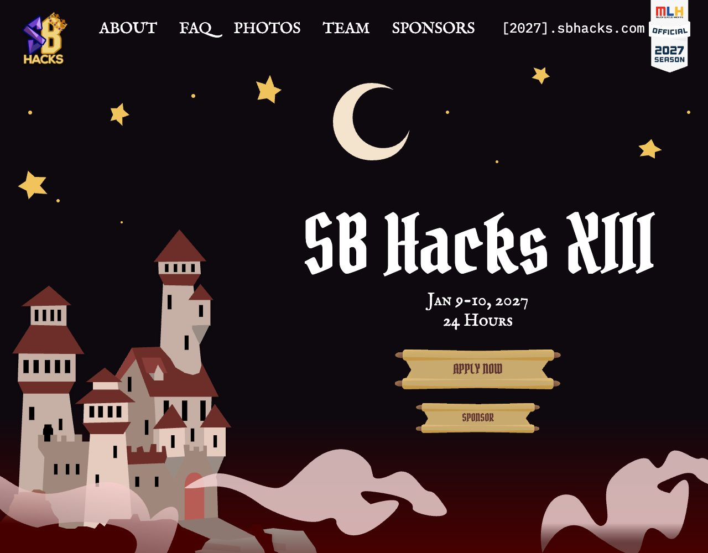
Jan 9 · SB Hacks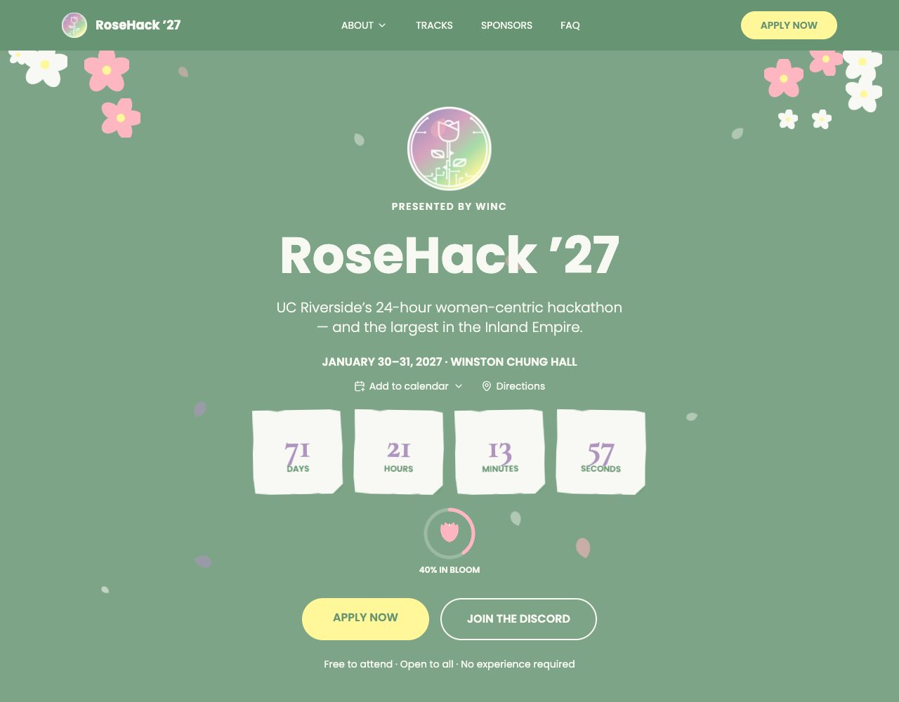
Jan 30 · Rose Hack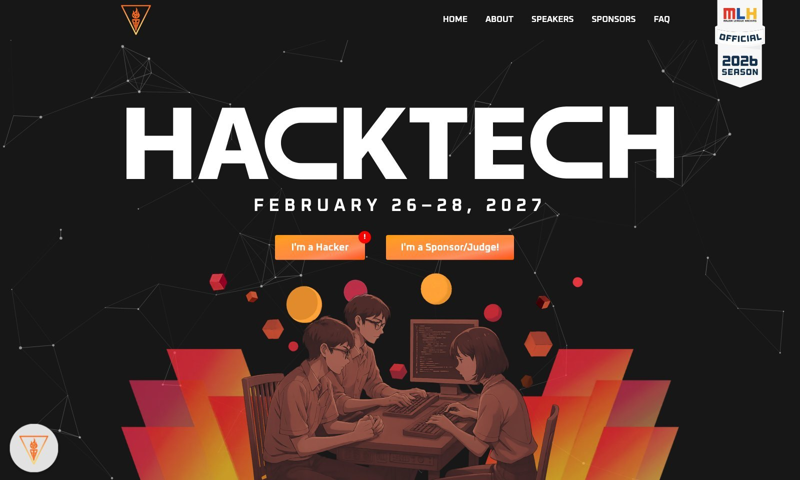
Feb 26 · Hacktech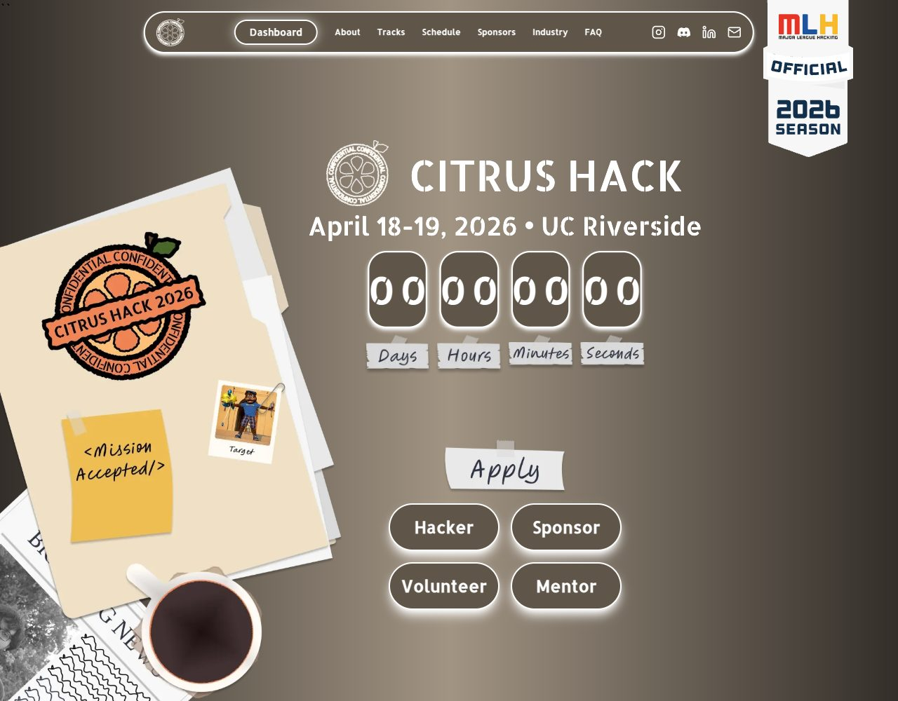
Spring · Citrus Hack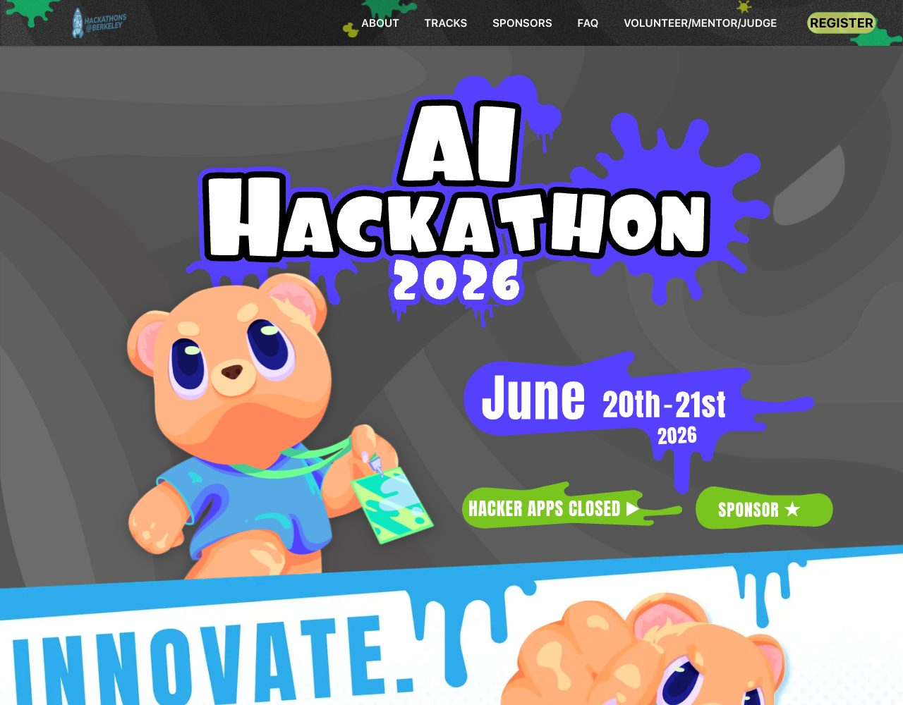
June · Cal AI Hack
Screenshots of each event’s site. Every link is on the resource page.
What each one gets you
Do this
You get
Helps most if you want
- ResearchA professor’s letter and a projectGrad school, AI research, medicine
- Jobs and internshipsPay, experience, a referenceA software, engineering, or business job
- HackathonsA team project to show in interviewsSoftware, startups, products
- Transfer programsA guaranteed spot or priority reviewEveryone transferring
Where do you want to end up?
- Grad school or AI researchGet into a lab first: STEM Connect, Bridges, or email a professor. Then an NSF REU.
- A software or engineering jobOne hackathon this year, then an internship near Riverside or at a DOE lab.
- Medicine or health scienceNIH summer internships and a research spot in a UCR lab.
- Not sure yetTutor or join College Corps, and try one hackathon.
Your four semesters.
- Semester 1UC TAP account, EOPS or MESA, Handshake.
- Semester 2Apply for summer programs, December to March.
- Semester 3TAG in September. Apply by November 30.
- Semester 4ADT by February 15. FAFSA by March 2.
Due before winter break.
Due January to March.
Do one now · 10 minutes
Make a UC TAP account, log in to Handshake, or start the RCCD scholarship app.
Before you go
Every link from today.
The PDF is on the Discord.
Next meeting Dec 3 · 2:30 PM · BLCIS A-210
GDG on Campus Riverside City College is an independent group; our activities and the opinions expressed here should in no way be linked to Google, the corporation.